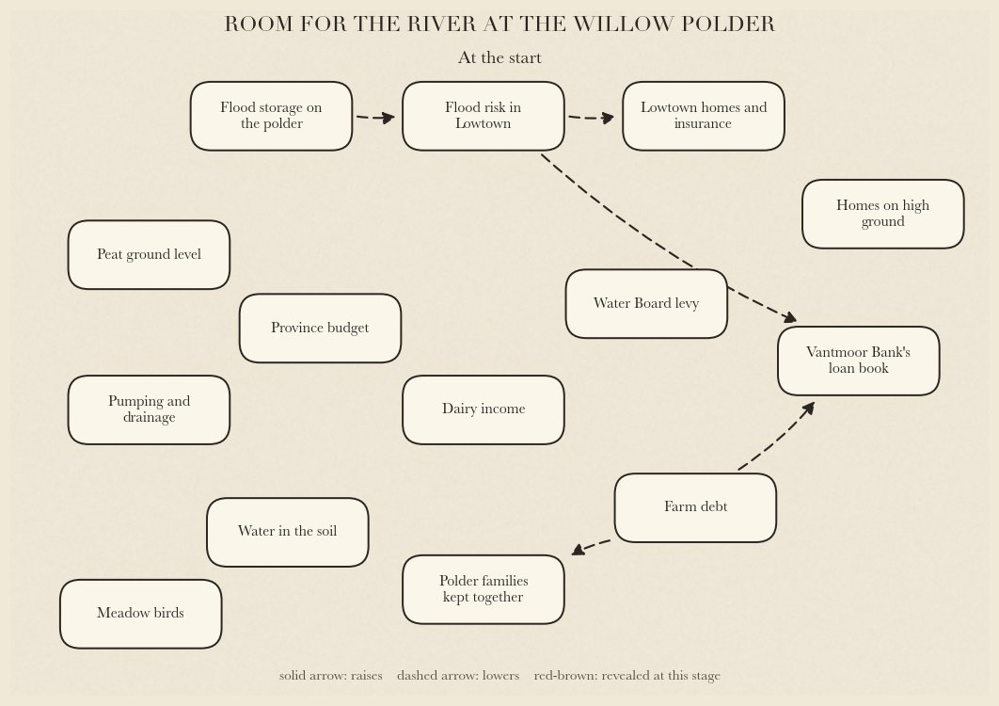

Scenario 1
Room for the River at the Willow Polder
The Willow Polder is 300 hectares of low dairy land beside the river Velmar, with twelve family farms on it. Downstream, the tenants of Lowtown are flooded first and fixed last, and their insurer has stopped renewing. A developer holds options on the polder land, and a wetlands trust counts fewer godwits every spring.
The proposal, from the province: Turn the polder into flood storage that fills in a high river, about once in ten years. If nothing passes: The province raises the dyke at Lowtown instead. It holds for about twenty years, and the next flood comes higher.
| Term | a, as proposed | b | c |
|---|---|---|---|
| Who pays for the works | a the province pays it all | b the Water Board levy pays a third | c a charge on new high-ground homes pays a third |
| The polder families' land | a bought out at today's farmland price | b the families keep it and are paid each year to let it flood | c bought out at replacement value |
| The basin | a a dug storage basin, fenced | b a shallow basin the families graze | c a nature reserve run by the Wetlands Trust |
| The developer's options on the polder | a cancelled; no new building | b swapped for building rights on high ground | c bought out in cash by the province |
| The families' homes | a cash only; each family finds its own home | b the families move together to plots side by side | c each family is rehoused on its own across Velmond |
The map, as the experts reveal it

The experts: Dr Pieter Brandsma, flood-risk economist; Ellen Vos, provincial auditor; Koen de Ruiter, agronomist. Red-brown arrows are the ones revealed at that stage.
The six stakeholders
Ruud van Dam director of a housing developer
“I'm not against the river. I'm against being the only one who pays for it.”
Answers to My shareholders. Red line: no new building anywhere.
Private line
We hold purchase options on 120 hectares of the Willow Polder. If the polder becomes water with no swap, the options are worth nothing.
Marieke de Wit regional lending director, Vantmoor Bank
“I can wait for a good deal. I can't wait for a bad loan.”
Answers to The bank's credit committee. Red line: a nature reserve run by the Wetlands Trust.
Private line
Three of the polder farm loans are already in arrears. Cash repays them at once; a nature reserve would leave them unpaid.
Samira El Idrissi chair of the Lowtown tenants' union
“Lowtown floods first and gets fixed last. This time we're in the room.”
Answers to The tenants of Lowtown, who meet in the community centre every month. Red line: the Water Board levy pays a third.
Private line
The insurer has told me privately that our blocks won't be renewed unless real storage is built. A levy rise goes straight into my members' rents.
Dirk Hoekstra chair of the Velmar Water Board
“I can raise any dyke you like. I can't raise it forever.”
Answers to The Water Board's assembly, elected by landowners and residents. Red line: the Water Board levy pays a third.
Private line
Half my assembly own polder land. If they lose it cheaply, I lose the chair.
Maaike Verhoef ecologist, Velmar Wetlands Trust
“Every spring there are fewer godwits. They need wet meadows, not a concrete basin.”
Answers to The trust's members and its meadow-bird volunteers. Red line: a dug storage basin, fenced.
Private line
The trust's own reserve next door floods badly every winter. A reserve on the polder would fix that, and we'd be accused of a land grab.
Jannie Kok dairy farmer on the Willow Polder
“My great-grandfather was born in that farmhouse. You want to flood it once every ten years and call that a plan.”
Answers to The eleven other families on the polder, who chose me to speak for them. Red line: bought out at today's farmland price.
Private line
Three of the twelve families are behind on their loans. A good price would save them, and I can't say that in front of the bank.